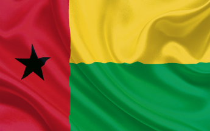

Guine bissau 2º D
A Guiné-Bissau, banhada pelo Oceano Atlântico, é um pequeno tesouro escondido na costa oeste da África. Este país, abençoado com uma paisagem diversificada e uma rica herança cultural, convida os visitantes a explorar suas maravilhas.
As praias intocadas de areia dourada se estendem ao longo da costa, beijadas pelo sol radiante que pinta o horizonte com tons vibrantes. As águas azuis do Atlântico acolhem os curiosos, proporcionando um refúgio sereno para aqueles que buscam paz e tranquilidade.
A diversidade natural da Guiné-Bissau se manifesta em suas florestas exuberantes, onde uma variedade de flora e fauna cria um espetáculo esplêndido para os amantes da natureza. Pássaros coloridos dançam entre as árvores, enquanto animais selvagens espreitam nas sombras, criando um ecossistema verdadeiramente único.
Além da beleza natural, a rica cultura da Guiné-Bissau é uma tapeçaria de tradições, música e dança. Os ritmos pulsantes ressoam nas aldeias, contando histórias de um passado profundo e de uma comunidade unida. Os trajes tradicionais tecem uma história visual, representando a riqueza da diversidade étnica que caracteriza esta nação encantadora.
A Guiné-Bissau, com sua história complexa e suas pessoas acolhedoras, é mais do que um destino turístico; é um capítulo vívido na narrativa da África Ocidental. À medida que o sol se põe sobre suas paisagens cativantes, a Guiné-Bissau permanece como uma jóia brilhante, aguardando ser descoberta e apreciada por aqueles que buscam a autenticidade e a beleza que este país singular oferece.
A capital, Bissau, tem seu charme com mercados movimentados, avenidas arborizadas e o Museu Nacional Ethnographic dedicado à cultura guineense

A cidade de Cacheu é conhecida por sua história colonial e abriga a Fortaleza de Amura, uma construção portuguesa do século XVII. A fortaleza é um testemunho da época colonial e oferece vistas panorâmicas da cidade.
Este arquipélago é formado por cerca de 88 ilhas e ilhotas, sendo um local de beleza natural excepcional. As praias, manguezais, e a diversidade da vida selvagem, incluindo tartarugas marinhas, tornam os Bijagós um destino imperdível.
João Carlos
Este site foi feito com carinho, pensado em cada detalhe para proporcionar uma
experiência única a vocês. Cada imagem, palavra e recurso foi escolhido com o intuito de
compartilhar algo significativo e valioso.
Sua presença aqui faz toda a diferença, e agradeço por serem parte desta jornada.
Cada clique é como um eco de esforço, criatividade e paixão que dedico para criar
este espaço virtual.
Obrigado por tornar este site especial